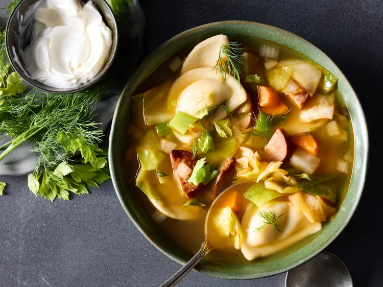

Kielbasa Pierogi Soup
Home

Description
Pillowy pierogi, hearty kielbasa, and tender cabbage bulk up paprika-flavored broth for a tasty, yet quick soup. For extra flavor, brown the pierogi in batches with 2 tablespoons butter in an extra-large skillet before adding them to the soup.
Ingredients
- 1 tablespoon olive oil
- 1 (14-ounce) package Polish kielbasa, cut into half moons
- 1/2 medium head green cabbage, chopped (about 5 cups)
- 1 cup chopped yellow onion
- 1 large carrot, peeled and chopped
- 1 large stalk celery, chopped, plus leaves for garnish
- 8 cups low-sodium chicken broth
- 1 tablespoon Dijon mustard
- 1 1/2 teaspoons smoked paprika
- 1 teaspoon caraway seeds
- 1/4 teaspoon salt
- 1 (24- to 26-ounce) package frozen mini pierogi (such as Mrs. T’s)
- 2 tablespoons lemon juice or apple cider vinegar
- 1/3 cup fresh dill, stemmed, plus more for garnish
- sour cream, for serving
Steps
- Heat oil over medium heat in a 6- to 8-quart Dutch oven. Add kielbasa; cook, stirring occasionally, until browned, about 5 minutes. Use a slotted spoon to transfer kielbasa to a paper towel-lined plate.
- Increase heat to medium-high. Add cabbage; cook, stirring occasionally, until browned, 4 to 5 minutes. Reduce heat to medium. Add onion, carrot, and celery; cook, stirring occasionally, until softened, 3 to 4 minutes.
- Return kielbasa to the pot; stir in broth, mustard, paprika, caraway seeds, and salt. Add pierogi to soup. Cook, uncovered, until pierogi are tender and float, about 5 minutes. Stir in lemon juice and dill. Garnish with celery leaves and additional dill. Serve with sour cream.